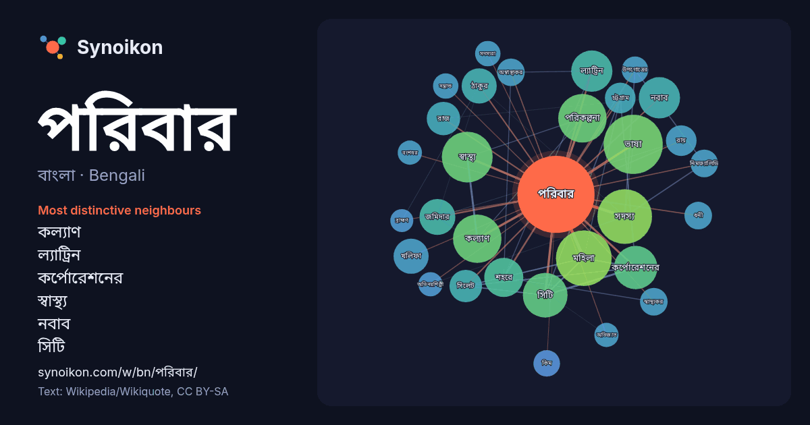

বাংলা · Bengali · popular word
পরিবার
“family” · The words found around it in 1300 instances from Bengali Wikipedia, Wikiquote.

Most distinctive neighbours
- কল্যাণ 31×
- ল্যাট্রিন 28×
- কর্পোরেশনের 27×
- স্বাস্থ্য 25×
- নবাব 22×
- সিটি 19×
- ঠাকুর 17×
- ভাষা 17×
- খলিফা 17×
- পরিকল্পনা 15×
- মহিলা 15×
- রাজ 14×
- নিমফ্যালিডি 14×
- সিলেট 13×
- অস্বাস্থ্যকর 13×
- স্বাস্থ্যকর 13×
- জমিদার 13×
- উপগোত্রের 12×
- কিম 11×
- সম্ভ্রান্ত 11×
× = how many times more often than in general Bengali Wikipedia text.
Most frequent neighbours
- ভাষা 60
- মহিলা 53
- সদস্য 51
- স্বাস্থ্য 44
- কল্যাণ 40
- পরিকল্পনা 40
- সিটি 34
- কর্পোরেশনের 32
- জন্মগ্রহণ 31
- বাংলাদেশের 31
- ভারতীয় 30
- নবাব 29
- ল্যাট্রিন 29
- সময় 27
- শহরে 26
- রাজনৈতিক 25
- জমিদার 22
- খলিফা 21
- ঠাকুর 21
- একজন 19
In context
- পরিবার হচ্ছে সগোত্রতা বা ঘনিষ্ঠ সম্বন্ধ দ্বারা সম্পর্কিত ব্যক্তিদের একটি গোষ্ঠী। এটি সামাজিক নিয়মের ভিত্তি। কোনো আদর্শ পরিবার ভবিষ্যৎবাচ্যতা, সংগঠন ও Wikipedia snippets · পরিবার
- ঠাকুর পরিবার কলকাতার একটি খ্যাতনামা পরিবার। এই পরিবারের ইতিহাস প্রায় তিনশো বছরের। বাংলার নবজাগরণে এই পরিবারের প্রভাব অত্যন্ত গভীর। এই পরিবারের সদস্যেরা Wikipedia snippets · ঠাকুর পরিবার
- পতৌদি পরিবার হচ্ছে ভারতের প্রাক্তন রাজধানী পতৌদি রাজ্যের নবাব পরিবার। এই পরিবারটি পাঁচ শতাব্দী পূর্বে আফগানিস্তান থেকে আগত বলে ধারণা করা হয়। মনসুর আলি Wikipedia snippets · পতৌদি পরিবার
- সিংড়ানাটোর পরিবার বাংলাদেশের রাজশাহী অঞ্চলের নাটোর জেলার সিংড়া উপজেলার একটি বিখ্যাত জমিদার পরিবার। এই পরিবার গোল-ই-আফরোজ কলেজ প্রতিষ্ঠা করেছে। গোল-ই-আফরোজ Wikipedia snippets · সিংড়ানাটোর পরিবার
- ইস্পাহানি পরিবার হচ্ছে বাংলাদেশের একটি ফার্সি-বাঙালি ব্যবসায়ী পরিবার। পরিবারটি দেশের অন্যতম শীর্ষস্থানীয় ব্যবসায় প্রতিষ্ঠান ইস্পাহানি গ্রুপের মালিক Wikipedia snippets · ইস্পাহানি পরিবার
- নবাব পরিবার ছিলো ব্রিটিশ বাংলার সবচেয়ে বড় মুসলিম জমিদার পরিবার। সিপাহী বিপ্লবের সময় ব্রিটিশদের প্রতি বিশ্বস্ততার জন্য ব্রিটিশ রাজ এই পরিবারকে নবাব Wikipedia snippets · ঢাকার নবাব পরিবার
- রয়েছে। সাধারণভাবে এই পরিবার "কার্প পরিবার" বা "মিনু পরিবার" নামেও পরিচিত। সিপ্রিনিডি হল বৃহত্তম এবং সর্বাধিক বৈচিত্র্যময় পরিবার পরিবার এবং সাধারণভাবে বৃহত্তম Wikipedia snippets · কার্প পরিবার
- জিয়া পরিবার হলো বাংলাদেশের একটি রাজনৈতিক পরিবার যারা বাংলাদেশের অন্যতম প্রধান রাজনৈতিক দল বাংলাদেশ জাতীয়তাবাদী দলের নেতৃত্বে রয়েছে। তারা পৈতৃক বংশ দ্বারা Wikipedia snippets · জিয়া–মজুমদার পরিবার
More Bengali words
- অরণ্য
- আয়না
- ইতিহাস
- ঈশ্বর
- কাজ
- কুকুর
- ক্ষমতা
- খাদ্য
- গান
- গ্রীষ্ম
- ঘড়ি
- ঘণ্টা
- ঘোড়া
- ছায়া
- জননী
- জলবায়ু
- জীবন
- ঝড়
- টাকা
- ট্রেন
- দারুচিনি
- দ্বীপ
- নক্ষত্র
- নীরবতা
- পানি
- পাহাড়
- প্রকৃতি
- বাগান
- বিজ্ঞান
- বিড়াল
- বৃষ্টি
- ভাষা
- মধু
- মরুভূমি
- মানচিত্র
- মৃত্যু
- রাস্তা
- রুটি
- লবণ
- শরৎ
- শহর
- শিল্প
- শীত
- সত্য
- সময়
- সেতু
- সোনা
- স্বাস্থ্য
- হৃদয়
Precomputed on 2026-10-09 with default settings (±5 words, medium corpus). The interactive map can refresh it with live data.